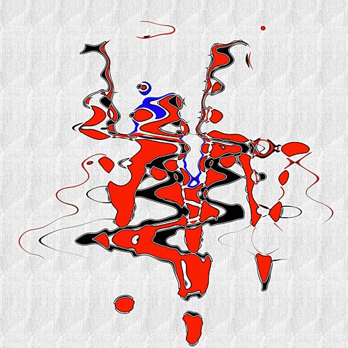
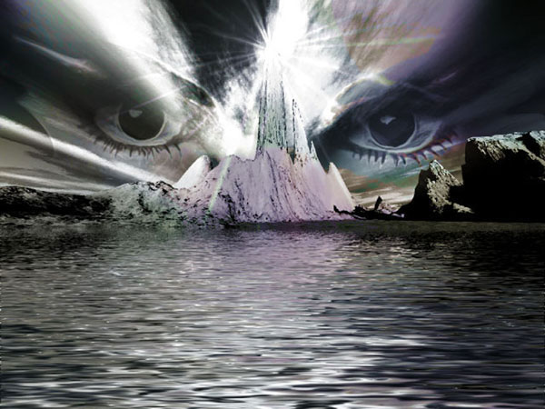
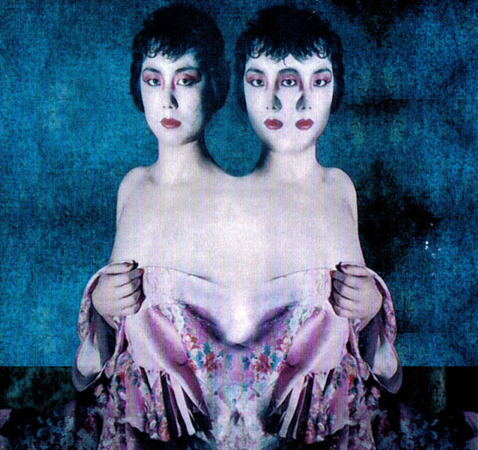
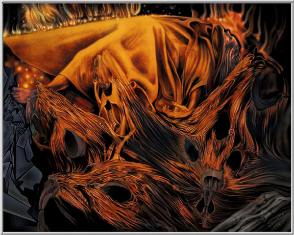
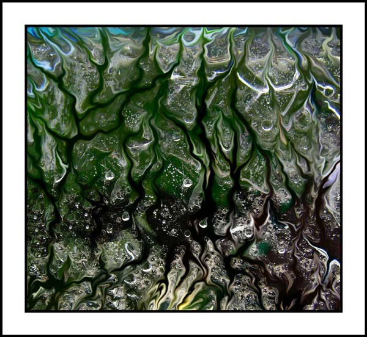

My Dog Is Dreaming
by J Velasco
09/01/2021

Composition 62 
by Gerhard Scholz
09/02/2021
Vue Lointaine 
by Bruno Marini
09/03/2021
Siamese Twins 
by Lozmar
09/04/2021
Eunka Dreaming
by Pavel Rehurek
09/05/2021
Funeral Pyre 
by Noel Bebee
09/06/2021
Breaking Through 
by Rebekah Baker
09/07/2021
Feathers
by Carlos Varela
09/08/2021

Lobby 3 Palacio Real
by Carlos Varela
09/09/2021

Subconsciousness Decisions
by Dominic Brown
09/10/2021